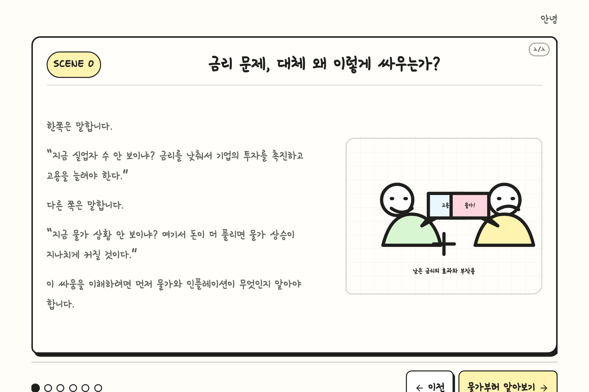
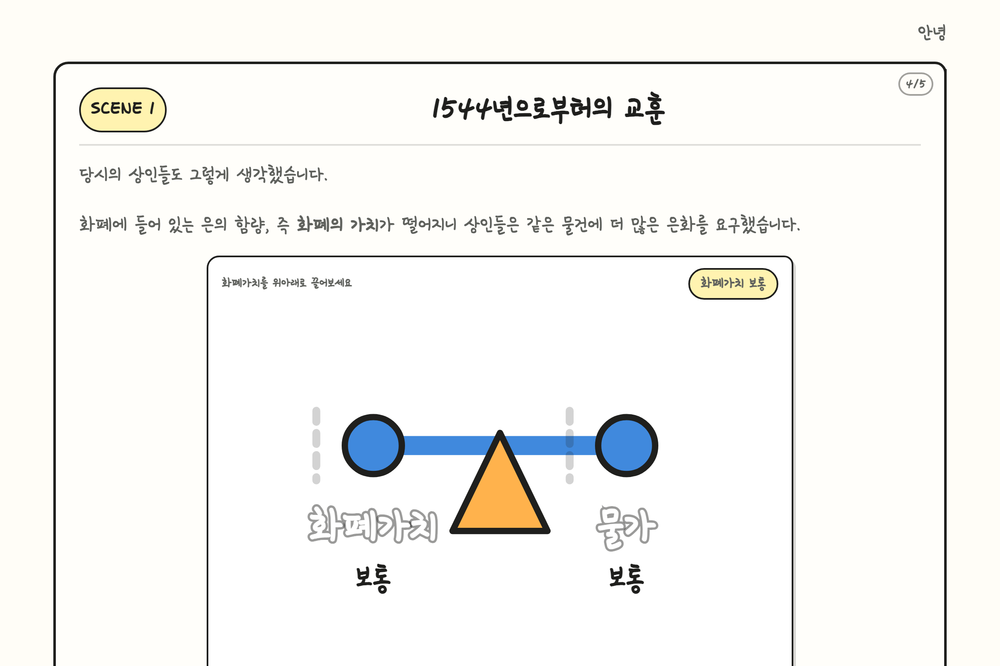
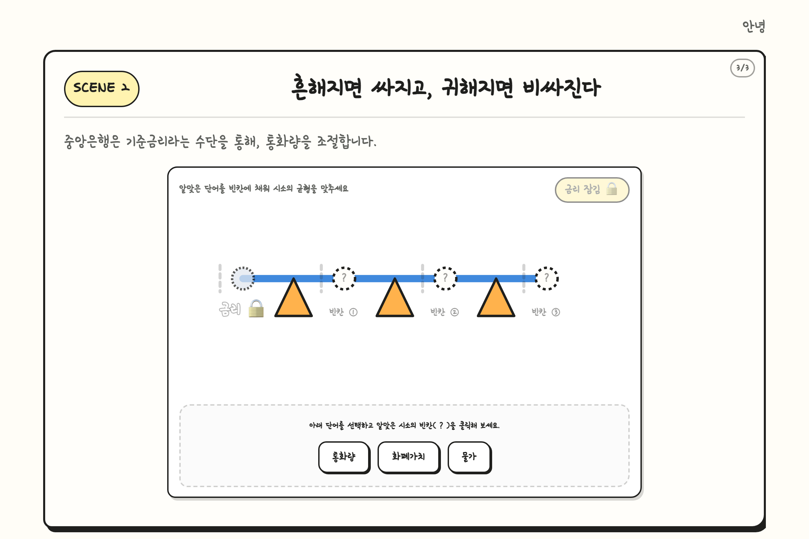
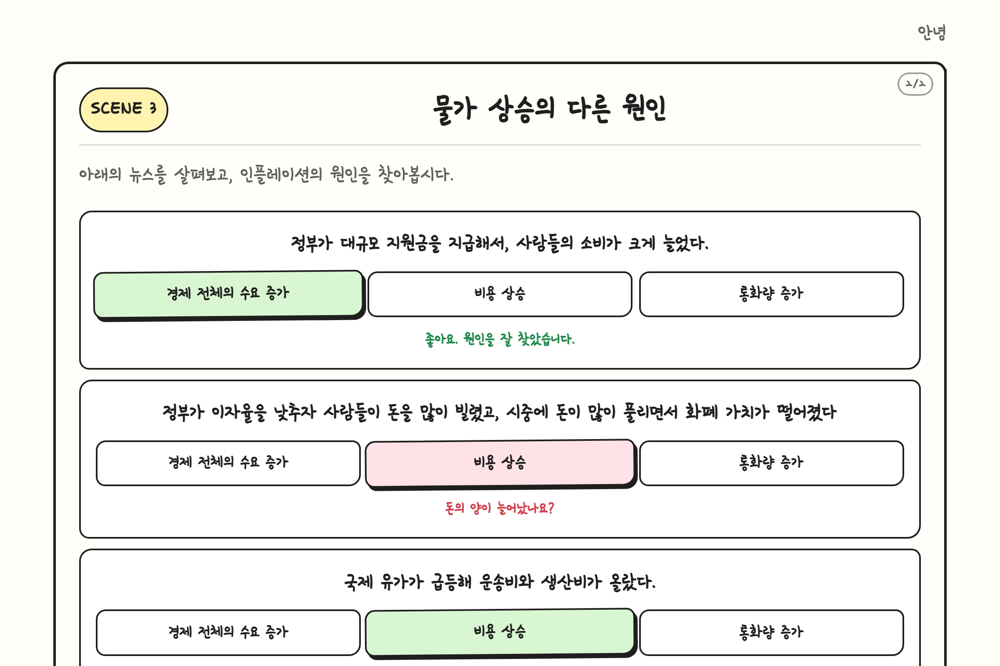
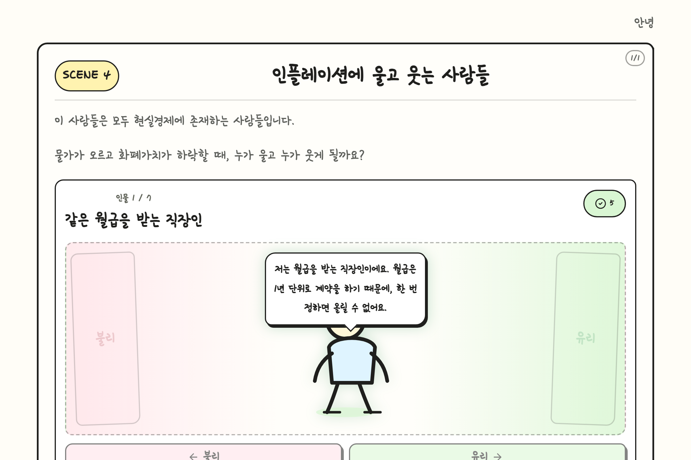
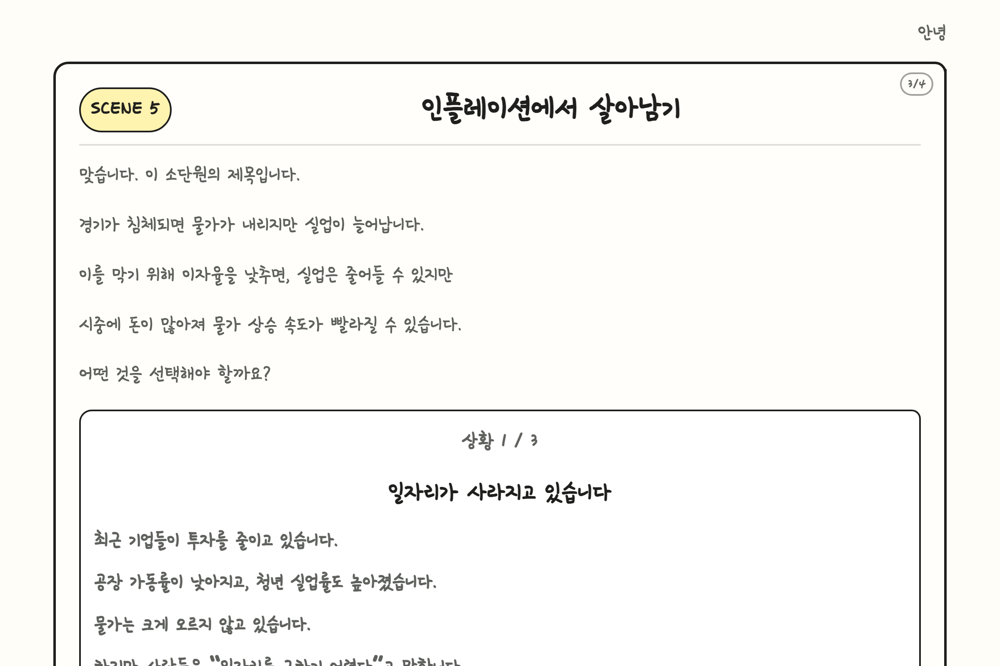

에듀테크 앱을 활용한 참여형 수업 설계 가이드
본 수업은 인플레이션의 정의, 원인, 그리고 다양한 경제주체에 미치는 영향을 학습한 뒤, 중앙은행의 통화정책(금리 조절) 프로세스를 가상의 시나리오를 바탕으로 체험할 수 있도록 설계되었습니다.
수업 활동: 실생활 및 신문 기사 속 대립 상황을 시각적으로 확인하고 동기 부여하기.

수업 활동: 역사적 사례(헨리 8세의 대악화 정책)를 통한 화폐 가치와 물가의 관계 이해.
Q: 은 함량이 25%로 떨어진 헨리 8세의 새 은화가 유통될 때, 칼 한 자루를 은화 1닢에 팔던 상인은 어떻게 할까?
동작 원리: 화폐가치 노드를 마우스나 터치로 아래위로 조작해 봅니다.
화폐의 가치가 하락하면 가격(물건값)이 오릅니다. 이를 "물가 상승"이라 하며, 물가가 계속해서 상승하는 경제 현상을 "인플레이션"이라고 정의합니다.

수업 활동: 현대 지폐 시스템에서의 '통화량'과 '기준금리'의 상관관계 파악.
동작 원리: 최초 상태에서는 금리 레버가 잠겨있어 작동하지 않습니다. 아래 빈칸에 적절한 단어를 드래그 앤 드롭으로 채워 정답을 맞추면 시소가 활성화됩니다.
잠금 해제 후 조작 포인트:

수업 활동: 인플레이션이 발생하는 3가지 핵심 원인을 신문 뉴스를 통해 분류해 보기.
| 뉴스 내용 | 정답 카테고리 | 교사 힌트 가이드 |
|---|---|---|
| "정부가 대규모 지원금을 지급해서, 사람들의 소비가 크게 늘었다." | 수요 견인 | "사람들이 더 사려고(수요) 했나요?" |
| "정부가 이자율을 낮추자 사람들이 돈을 많이 빌렸고, 시중에 돈이 많이 풀리면서 화폐 가치가 떨어졌다." | 통화량 증가 | "돈(통화)의 총량이 늘어났나요?" |
| "국제 유가가 급등해 운송비와 생산비가 올랐다." | 비용 인상 | "물건을 만드는 데 드는 비용이 올랐나요?" |

수업 활동: 인플레이션(물가 상승 & 화폐가치 하락) 시기 각 경제주체의 이익과 손해 여부 판별 (스와이프 카드 게임형 활동).
| 등장 인물 | 대사 & 입장 | 정답 | 교사 설명 포인트 |
|---|---|---|---|
| 월급 생활자 | "월급은 1년 단위로 계약하여 고정되어 있어요." | 불리하다 (운다) | 물가는 오르지만 소득이 고정되어 있으면 실질 구매력이 줄어듭니다. |
| 은행 예금 보유자 | "은행 예금에 500만 원을 넣어놓고 고정 이자만 받아요." | 불리하다 (운다) | 화폐가치가 하락하므로 통장에 찍힌 액수는 같아도 실질적 돈의 가치는 낮아집니다. |
| 고정금리 대출자 | "1억 대출을 받아 매년 고정으로 400만 원씩 갚고 있어요." | 유리하다 (웃는다) | 돈의 가치가 떨어져서 실질적인 상환 부담이 경감됩니다. |
| 밀 수입 기업 | "밀을 수입해 파는데, 국내 밀값이 크게 올랐어요." | 유리하다 (웃는다) | 국내 물가와 원자재 가격이 비싸질 때 원재료를 해외에서 수입하는 기업이 제품 가격을 올리거나 화폐가치가 변할 시 유리/불리해질 수 있는 특성을 학습합니다. |
| 장기 채무자 | "집 장만을 위해 10억을 빌렸고 30년 뒤에 갚기로 했어요." | 유리하다 (웃는다) | 돈의 가치가 떨어져서 먼 미래에 갚을 돈의 실질 가치가 낮아집니다. |
| 장기 채권자 | "친구에게 10억을 빌려줬고 10년 뒤 그대로 돌려받기로 했어요." | 불리하다 (운다) | 명목 금액은 10억으로 같으나 10년 뒤 돌려받은 돈으로 살 수 있는 물건의 양은 현저히 줄어듭니다. |
| 실물자산 보유자 | "금이나 부동산을 보유하고 있습니다." | 유리하다 (웃는다) | 화폐가치가 떨어질 때 실물자산의 가치는 동반 상승하므로 자산 보존에 유리합니다. |

수업 활동: 중앙은행 통화위원회 입장이 되어 물가 상승률과 고용 지표를 최적으로 유지하기 위한 의사결정 시뮬레이션.
